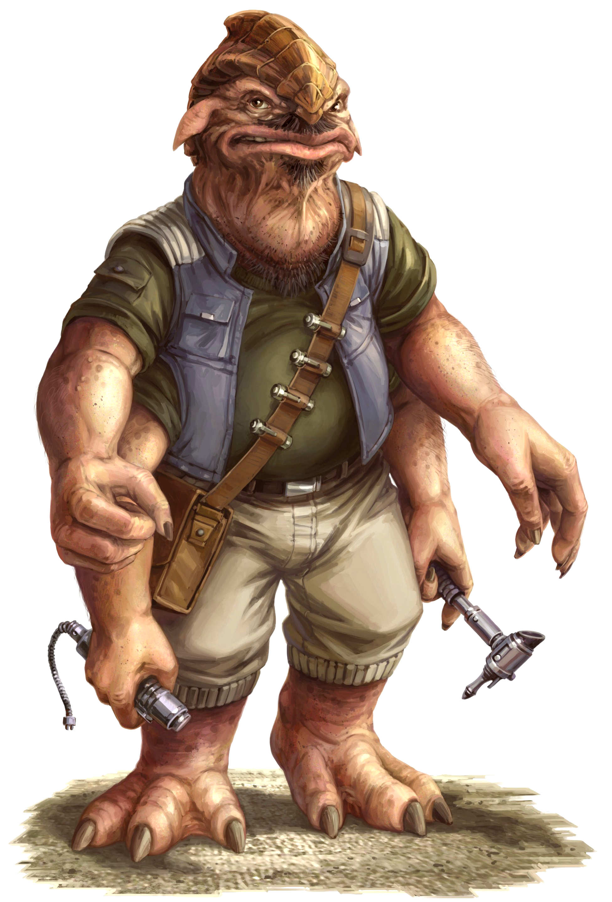

Besalisk
Special Abilities: Besalisks begin the game with one rank in Resilience. They still may not train Resilience above rank 2 during character creation.
Additional Limbs: Besalisks have multiple sets of arms. As a result, they gain an additional free maneuver per turn, though still may not perform more than Lwo maneuvers per turn.
The four-armed Besalisks are one of the larger species galactic travelers are likely to encounter on a semi-regular basis. Towering over and standing considerably wider at the shoulder than most humans, Besalisks tend to make an impression. Though their massive forms can seem threatening at first, many Besalisks are quick to laugh and slow to anger, at least compared to humans.
Besalisks live in major population centers across the galaxy and are scattered throughout the Outer Rim Territories, though rarely in large numbers. While by no means unintelligent, many Besalisks who travel the galaxy fail to recognize the seriousness or complexity of some situations in which they find themselves. Ojom is a relatively peaceful world compared to many of the seedier planets in the Outer Rim, and many of the galaxy's dangers are strange. Of course, as with most species. Besalisks are quite capable of adapting to their environment, and so they learn to survive wherever they go, from the Core Worlds to the lawless fringes of the gaiaxy
Besalisks are clever and motivated in their selected line of work. They make for natural machinists, and also succeed in other task-oriented professions. Their large hands and bodies make fine, small-scale work challenging, and it is difficult for them to work in confined spaces. Employers often team Besalisk Technicians with human-sized individuals or droids to carry out work requiring fine detail and small parts.
Besalisk technical aptitude is well known among the Slicers and Mechanics of the galaxy. This reputation is especially pervasive in the Outer Rim, and among those operating in the penumbra between galactic society and the lawless fringe. Besalisks can be a natural fit for engineering jobs that require strength in addition to finesse.
However, Besalisks can be found in almost any line of work. In fact, they will often jump at the chance to pursue their own dreams or take advantage of a lucrative opportunity to work for themselves, and are even known to abandon their position merely because they have grown bored. It is one thing to leave a corporate workforce or average job, but Besalisks abandoning a criminal syndicate or similar employer often don't understand the risks of offending their old boss.
Besalisks arc burlier than members of most other humanoid species, average about J .8 meters in height, and have thick limbs and a broad neck nearly the size of their wide heads. Their segmented, overlapping head ridge ends in a small beaklike feature where many humanoids have a form of nose. The beak reveals the Besalisk's avian heritage, though new observers could be forgiven for incorrectly perceiving their physical features as reptilian.
Besalisks deviate from the form of most humanoid species in one major way: they have four powerful arms. One set of arms is primary, and the other is secondary, typically acting in synchronized movements with the first pair. Much like other humanoids, Besalisks also generally have a primary hand; the remaining limbs are typically considered off-hands. They rarely wear footwear, which tends to be unwieldy on their large, three-toed feet. They arc adapted to the frigid weather of their homeworld, Ojom, and tend to perspire heavily in the climates preferred by many of the galaxy's more numerous species.
The Besalisk's considerable size is due to the species' development on Ojom. The Besalisks adapted to the cold, inhospitable conditions of life on the glaciers by evolving the ability to naturally store more food and water than most beings. The Besalisk metabolism typically requires a lot of food when they are active, however, storing what it can when food is plentiful.
Besalisks aren’t much for complex governments or the sort of nation-states common to most advanced species. On Ojom, they live in small communities of a few thousand each, scattered across the multitude of mobile glaciers that float through the world’s dominating oceans. Each community elects a leader who acts as its final arbiter of disputes, but that is the extent of their governing institutions. During the relatively warmer months, communities hold annual events, or conclaves, at which individuals participate in various social traditions, including mating rituals.
With their general aversion to centralized governments, the Besalisks never had their own representative in the Galactic or Imperial Senates. They are highly autonomous and independent, which can pose a problem under Imperial rule. Threatened by potential Imperial or Imperial-condoned slavery, some communities have turned to others in the galaxy for protection, no matter how dubious its source might be.
Unfortunately, those willing to help the Besalisks typically operate on the shadier side of the law, and escaping from their so-called protection can be highly challenging. Payments are expensive, interest is high, and there are continual costs to maintain "services.” The Hutts in particular tend to exploit the situation until a community is no longer profitable. Some communities do eventually escape their “protectors, ” though only at a high cost. A few turn to violence when nothing else works. Though criminal cartels are often petty and cruel overlords, bloodshed in sufficient quantity can be bad enough for business to make them pack up and leave.
Traveling to the Besalisk homeworld of Ojom is challenging, as it rests within the Deep Core of the galaxy. Upon his ascension, the Emperor established the Deep Core Security Zone, which makes travel virtually impossible without Imperial permits and approvals, which are difficult to obtain and invite harsh Imperial scrutiny. However, since Ojom lies relatively close to the edge of the Deep Core, the Hutts and other nefarious organizations that wish to exploit the Besalisks have found ways around some of the security measures. A few know of dangerous secret hyperspace routes, variations of which date back to the days of the Republic. Many take a more direct approach and simply bribe the proper Imperial authorities to issue the necessary permits. These bureaucrats are generally are stationed on worlds far from the Deep Core, and care little for the Besalisks.
Orbiting space stations provide the main meeting points for the Besalisks and outside visitors. While most have at least a token form of Imperial security, many security officers are heavily influenced by the Besalisks’ nefarious protectors. As such, they are highly useful for those involved in less than legal pursuits. Travelers find the stations to be much more welcoming than Ojom’s cold, harsh weather.
The Besalisks’ native language is composed of sharp noises that resemble low grunts and series of barks. It is rare to hear it outside of Ojom, as Besalisks have no trouble learning and using Basic. Visitors rarely learn it themselves, even if they are able to create the proper sounds. Typical translator droids have the Besalisk language readily available, though it can be startling and surreal to hear it from a droid.
Besalisks living elsewhere in the galaxy often lead relatively solitary lives, though there is the occasional commune that has taken up a nomadic, deep-space existence. While their homeworld isn’t the most technologically advanced in the galaxy, Besalisks have an aptitude and creativity that makes them well-suited to a wide variety of jobs.
Besalisks can be found in almost any vocational position, from cantina owner to captain of a ship. Some Besalisks earn good credits as enforcers or security personnel simply based on their size and the number of intimidating weapons they can carry at once, even if most would be hard-pressed to fire more than one of these deadly firearms at a time. It is hard to brush off any threat backed by four oversized blasters. Of course, many Besalisks pursue more mundane jobs. Besalisk lawyers, doctors, traders, and entrepreneurs can be found on many worlds across the galaxy.
Besalisks fall among the many species in the galaxy that are recognizable to the average Imperial citizen but rarely encountered. Self-styled Imperial nobility and other highly placed individuals are easily offended by Besalisk manners, such as they are. For their part, most Besalisks don’t care much about the petty disdain of such self-important people.
Besalisks who hail from Ojom, the Besalisk homeworld, tend to be traditionalists compared to those born elsewhere in the galaxy. Ojom is not a particularly hospitable world, but Besalisks are well adapted to its challenges. Their bodies are quite resistant to low temperatures, and their considerable physical strength allows them to make the long journeys between the glacier-top settlements when it comes time each year.
In the era of the Empire, many communities are frequently troubled by the Hutt kajidics. Due to this sometimes violent relationship between species, many Besalisks who leave Ojom do so as a result of trouble with the Hutts. However, the reach of the Hutt kajidics is considerable and, in the Outer Rim, escaping their grasp is no easy feat.
Players creating Besalisk characters can use this as a hook to expand on backgrounds, Obligations, or Motivations. Perhaps a PC must repay a debt to a Hutt cartel that “saved” the character’s village from Imperial oppression, or, alternately, seeks vengeance against Hutt enforcers who extorted the character’s friends and family. Besalisks from off-world might share such challenges, or want nothing to do with these issues because they have their own problems to overcome.